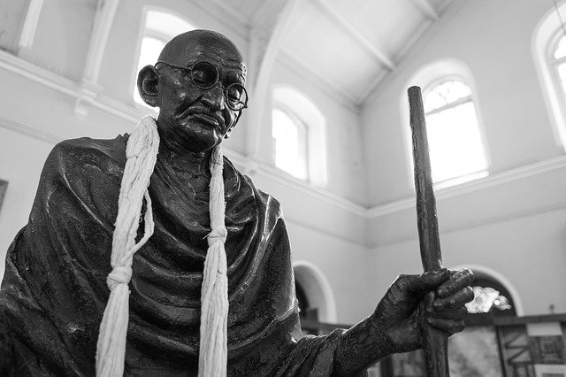

Gandhi on Democracy

Image by Daniel Christiansz from Pixabay
Democracy today is the defacto form of government for the people who desire freedom, liberty and progress, and India adopted it, to become the world largest democracy and today to a very great extent is the only democracy in Asia which has proved the mettle in the sea of authoritarianism. Gandhi and democracy are so connected that one cannot separate democracy from Gandhi's life, he was very much influenced by the Greek political philosophers like Plato, however we cannot put Gandhi under the domain of Plato for varied reasons.
"The greater the Institution, the greater the chances of abuse and, Democracy is the great Institution and therefore it is highly liable to abuse. The remedy, therefore is not avoidance of democracy but reduction of possible abuse to a minimum"
Lesson : Today many are doubtful and cynical on Democracy in India but it is in best for us to remain a democracy and fight within its realm.
Guide to a True Democracy:
1) Let the thoughts come in: "No school of thought can claim a monopoly of right judgment, we are all liable to err" therefore "In a vast country like India, there must be a room for all school of honest thought" we all owe to listen to others point of view and respect it as we expect them to do. If we don't come together we are letting the ship to sink and allowing a foreign domination.
2) Minimum Interference by the State: "A nation that runs its affair smoothly and effectively without much State interference is truly democractic"
3) Very Essence of democracy is, it has no place for violence: This might perceive to us as utopian view, but beneath the layer what lies is a message, that State which uses force and coercion unnecessarily cannot be called democratic.
India has been waving away from this message, there has been a tantamount increase in the coercion by the State whether it is in police custody or Blind use of lathi charge on students.
4) Association with other nations: A democratic nation like India "will gladly associate herself with other free nations for mutual defence against aggression and for economic cooperation. She will work for the establishment of a real world order based on freedom and democracy"
a. In this regard, right from the Independence, India has been following the message, India has been at the fore front at International forums calling for rule based and democratic rule.
5) Special Representation: A true democracy is one in which "every person represents all the varied interest which compose the Nation", it should include special representation for the people to raise their voices.
a. While the latter matter is visioned in the Constitution through reservation but the former is far from reality.
6) Weakest should have same opportunity as strongest: Indian state or per say any State today across the globe today, has become more pro rich rather than pro poor, Gandhi advocates for a mass effort and mass education for upliftment of masses, his see his efforts through Village industries, cooperate societies, awareness and education for the eradication of untouchability and discrimination, State need to provides this voluntarily and it should be their service.
a. Good thing: we have finally went for Right To Education and Bad Thing: High hand on unions who fight for poor.
7) A born democrat is a born disciplinarian: "Democracy comes naturally to him who is habituated normally to yield willingly obedience to law, humans or diving" A democrat should be utterly selfless, this is the acid test for a democrat.
a. Far from Selfless, our politician are only for self, far from obedience to law our parliament has 43% of MP's from criminal background.
8) Unrestricted Liberalism is the law of the beast of Jungle: "We should learn to strike a mean between individual freedom and social restrain", if individual takes a law into his hand, there is no State, it becomes anarchy therefore one should subdue their anger and let the State secure Justice.
a. If you feel State is doing wrong then point out the mistake and convey the message to masses, but never halt the governing process of the State, for it is possible to change the government once election comes but to stop the State which derives it power from the people is being anti-democrat.
What should not happen in democracy.
1) "True democracy cannot be worked by twenty men sitting at the centre, it has to work from below by the people of every village.
a. Left his message, today we are passing bills withing minutes in parliament, It is a mockery of Gandhi's message, he believed in building consensus and wide range consultation with varied sections for consideration.
2. Democracy should not be turned into mobocracy: "Nothing is so easy as to train mobs, for the simple reason that they have not mind, no premeditation, They act in frenzy, They repent quickly", "We must train these masses of men who have a heart of gold, who feel for the country, who want to be taught and led. But a few intelligent, sincere workers are needed, and the whole nation can be organized to act intelligently and democracy can be evolved out of mobocracy"
a. In this we have message, that very often we ridicule and make fun of trolls online, by doing this we are dejecting and rejecting them to come closer to us, rather one should be kind and gentle with them, one for sure, they will come out of their darkness.
3. Democracy cannot be Majoritarianism:" The role of Majority has a narrow application, i.e. one should yield to the majority in the matters of detail but is slavery to be amenable to the majority, no matter what it decisions are, democracy is not a state in which people act like a sheep, under democracy, Individual liberty and action is jealously guarded, I therefore, believe that the minority has a perfect right to act differently from that of majority"
a. This is by the greatest threat which our country is facing today, and one should always strive for the right to have a different opinion and respect for it, the best way to achieve it is through the rule of Constitution, when Constitution prevails everyone comes second.